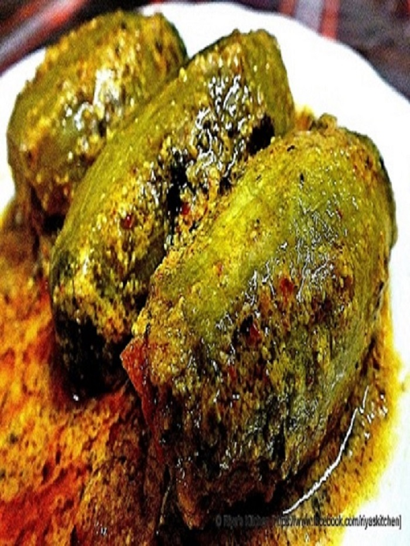

OUR SPECIALS
Check Simply Bengali's Special Recipes

Also known as Mishti Pulao.
Also known as Mishti Pulao, this dish of Basanti Pulao is a Bengai festive delight that is made during auspicious occasion of Durga Puja or Bengali new year. A fragrant rice dish along with the goodness of raisins and cashew nuts give a royal touch to this Pulao recipe.
| Steps | Basanti Polao Recipe |
|---|---|
| 1 | Wash and clean the rice and drain the water. |
| 2 | Smear the rice well with ghee and turmeric powder. Keep it covered for half an hour. |
| 3 | Fry the raisins and the cashews in heated ghee mixed with vegetable oil. |
| 4 | Keep the fried raisin and cashew aside. Add more ghee into the pan and when heated add bay leaf, cardamom, cinnamon and cloves |
| 5 | Add the grated ginger or ginger paste and fry a little. |
| 6 | Add the rice, stir gently to mix with the flavours. Pour 6 cups of warm water along with salt and sugar. |
| 7 | When the water dries up and the rice is well-cooked add the cashews and raisins. |
| 8 | Pour rest of the ghee, mix gently and cover the pot. Turn of the flame. |
| 9 | Serve Basanti Pulao hot. |
Bengali Style Stuffed Pointed Gourd Curry
Pointed Gourd/Parwal is called 'Potol' in Bengali and 'Dolma/Dorma' means a stuffed vegetable. This Bengali delicacy is usually made using prawns or fish. But in this vegetarian and low calorie version of the Potoler Dolma, the potol/parwal is stuffed with Indian Cottage Cheese and dry fruits. The stuffed potol is shallow fried instead of deep frying and is tossed in a tangy and spicy tomato-cashewnut gravy.
| Steps | Potoler Dolma Recipe |
|---|---|
| 1 | To begin making the Potoler Dolma recipe, heat 2 cups of water and when it starts to boil, add the peeled and deseeded parwal. |
| 2 | Let it boil for 3-4 minutes only. Drain the water and pat dry the par boiled parwal and set it aside. |
| 3 | Grind all the ingredients given under 'for the gravy' into a puree in a grinder and set it aside. |
| 4 | In a bowl, add the crumbled paneer, dry fruits, sugar, salt and mix well. |
| 5 | Stuff all the parboiled parwal carefully without breaking it. |
| 6 | You can tie the stuffed parwal with a thread if you are going to deep fry them. |
| 7 | Heat oil in a wide pan and shallow fry the stuffed parwal over low flame till they are uniformly browned on all sides. |
| 8 | Remove them and set it aside. |
| 9 | Heat the same pan with the remaining oil ( residue) and temper with cumin seeds. |
| 10 | Add the ground tomato onion puree, salt, turmeric powder, chilli powder, all spice powder and cook over low flame till the oil separates on the sides of the pan. |
| 11 | Stir in the cashew nut paste and mix well. |
| 12 | Garnish with chopped cilantro leaves and serve hot. |
paneer (Indian cottage cheese) and bell peppers cooked in a spicy masala
This recipe is called as kadai paneer as the whole dish is prepared in a kadai or karahi. this humble indian cookware which is similar to the chinese wok but with steeper sides. i prefer to use kadai in making recipes that needs a lot of stirring as it is heavy and has a thick bottomed base. if you don’t have a kadai, then make the recipe in a pan.
| # | Steps |
|---|---|
| 1 | In a grinder or mortar-pestle, take 1.5 tablespoons coriander seeds and 5 to 6 kashmiri red chilies.grind to a semi fine powder. |
| 2 | in a kadai, heat 2 tablespoons oil and add ⅓ to ½ cup finely chopped onions.saute onions till they turn translucent. |
| 3 | then add 1 teaspoon ginger-garlic paste and saute till the raw aroma of ginger-garlic goes away. |
| 4 | now add 2.5 to 3 cups finely chopped tomatoes and mix well |
| 5 | saute tomatoes for 3 to 4 minutes.then add the ground kadai masala to the tomatoes and mix well |
| 6 | saute the tomatoes till the whole mixture become like a paste and starts to leave oil. |
| 7 | now add ¾ to 1 cup capsicum julienne and saute the capsicum for some 3 to 4 minutes.then add green chilies. |
| 8 | add ½ cup water. you can add less or more water as required. |
| 9 | mix very well and saute till the capsicum is half done. if you want you can cook the capsicum completely. |
| 10 | once the capsicum is half cooked, then add garam masala powder and salt. mix these with the rest of the masala.again mix very well. |
| 11 | lastly add 1 teaspoon crushed kasuri methi (dry fenugreek leaves), ginger julienne (from 1 inch ginger) and 2 tablespoons coriander leaves. mix again. |
| 9 | serve kadai paneer, hot with rotis or naan or plain parathas |
Paturi is a Bengali word, It means food that wrapped and cooked in a leaf.
Paturi which is an age-old Bengali delicacy is more popular with fish but other than fish this also made with prawns, dal, cottage cheese/paneer, etc. The main ingredient of Paturi coated or mixed with some certain traditional spices first, and then wrapped up with banana leaves for further slow cooking. In this slow cooking method, the banana leaves become burnt, and the smokey aroma gets infused into the food, the outcome is scrumptious out of the world taste, which is simply unmatchable.
| # | Steps |
|---|---|
| 1 | In a strainer add 3 tbsp of yellow and 3 tbsp black mustard seeds (50:50), wash under running water, and grind with the green chillies to a smooth paste |
| 2 | In a bowl add mustard paste, mustard oil, turmeric powder, salt (as per taste), nigella seeds, and green chili paste mix well. Remember this mixture should be thick, not watery. |
| 3 | Add this mix to the freshly washed pieces of Ilish. Mix gently, keep aside. |
| 4 | Heat the banana leaf sheets from one edge to another (glossy side down) over low flame for a few seconds. This is for easy folding, care should be taken not to burn out the leaves. |
| 5 | Cut the banana leaves into rectangles. Keeping in mind that you need the leaf pieces to be spacious enough to wrap, and parcel one piece of Ilish. |
| 6 | Clean the leaf pieces with a wet kitchen towel. Grease the upper part of the leaf sheets with mustard oil. |
| 7 | Fold the end of the banana leaves, wrap and make a parcel. Tie with cotton thread. Continue the same process for every piece of fish. |
| 8 | Grease an iron tawa (not nonstick) with mustard oil. Place the fish parcels/paturi on tawa. |
| 9 | Cook for 20 minutes over low heat. Flip the parcels in between. |
| 10 | Let the parcels turn dark brown in color. Remove from the heat. |
| 11 | Your delicious Ilish Paturi is ready to devour. |
| 9 | Serve hot with steamed rice. Enjoy! |
Bengali style crispy fish cutlet recipe
Authentic bengali fish fry or cutlet is actually a recipe of bengali bhetki fish, as bhetki is the main ingredient of this recipe. And we bengali believe the authentic taste of fish cutlet only comes from bhetki fillet. We are popular for being love to eat fish and that is the basic reason for our experiments on fish recipes. And I personally believe this recipe is part of that successful experiments of our bengali kitchen.
| # | Steps |
|---|---|
| 1 | First, take boneless fish meat and make fish fillets(or fish slices) out of it by a sharp knife. |
| 2 | Now take 1 1/2 cup of lukewarm water in a bowl and put 1 tbsp vinegar to it and then add the fish fillets to it for 10 mins. |
| 3 | In between, take a small grinder jar, add 1 medium or 1/2 big size onion, 1/2 inch ginger, 6 garlic cloves, and 2 green chillies to it and make a fine paste(can add 2-3 tbsp water to make a smooth paste).. |
| 4 | Now take a mixing bowl, first add the onion-ginger-garlic-green chilli paste, then add black pepper powder. |
| 5 | Then add lemon juice and salt to the mixing bowl. Mix it well together. |
| 6 | Now remove the fish fillets from the water and squeeze it gently to make sure water is completely removed. And then add the fillets to the mixing bowl. |
| 7 | Then gently mix the fish fillets with the masalas and keep it for marination for 45 mins-1 hr.. |
| 8 | When the fish fillets completely marinated in masalas, then take another mixing bowl and add 2 eggs and 1/4 tsp salt to it. If using a double coat of breadcrumbs like then add 3 eggs. Beat it well. |
| 9 | Now take 1 cup of breadcrumbs and add 1/4 tsp salt to it too. Mix it well. |
| 10 | Take the bhetki fish fillet from the marination, first dip it into the beaten eggs and then coat it nicely with the breadcrumbs. |
| 11 | Bengali fish cutlet is ready with a single coat of breadcrumbs. If you give it a proper shape then follow the next step. |
| 9 | Later place this single coated raw fish cutlet on a chopping board and shape it up with a knife as shown in the pic. |
| 10 | If you don’t want to get a double coat of breadcrumbs then keep all the single coated raw fish cutlet in the freezer for 15-20 mins to get an awesome crunch. |
| 11 | And to get double breadcrumb coating, then take 2 cups of breadcrumbs, add 1/2 tsp salt to it. |
| 12 | Now take a pan, place it on medium heat, add refined oil for deep frying and let it gets hot. |
| 13 | Put the raw fish cutlet in the oil and slow down the flame for frying the fish cutlets correctly. |
| 14 | After some time, raise the flame to the medium again to get that perfect crunch of bengali fish cutlet. |
| 15 | And fry till it gets golden brown colour from both sides. |
| 16 | Then remove it from the pan on the paper towel to soak the excess oil. |
| 17 | Serve this bengali bhetki fish fry or cutlet recipe with kasundi or even tomato ketchup and salads. |
Prawns Cooked in a Tender Coconut Shell

A traditional Bengali preparation of prawns cooked in mustard and filled inside a coconut to get a combined flavor of mustard and coconut cream.
| # | Steps |
|---|---|
| 1 | Take a tender coconut (green coconut) which has started to form soft layers of coconut inside. |
| 2 | Make a whole (2x2 inches) on the top keeping the cutout to use as a lid later. Drain out the coconut water inside into a separate bowl and keep the coconut aside. |
| 3 | Make a paste of onion, garlic, ginger, green chilies and tomato |
| 4 | Remove the prawns from shells and marinate with salt, turmeric powder and mustard oil(1 table spoon) |
| 5 | Make a semi liquid paste of 3 tablespoon of mustard powder (home made mustard seed paste would be recommended) with coconut water (3-4 tablespoons). |
| 6 | Cook the marinated prawns for 2 minutes in microwave and keep aside. |
| 7 | Heat oil(2 table spoon) in a pan. Add paste of onion, garlic, ginger, tomato and green chili |
| 8 | When the paste well cooked and all the water is released (approx 5 minutes), add the semi-liquid mustard powder paste and cook for 2 minutes |
| 9 | Add the microwaved prawns and cook till the gravy is thick. |
| 10 | Pour the entire content of the step in the coconut, and then add 4 cut green chilies. |
| 11 | Cover the cut portion of the coconut with the coconut lid. |
| 12 | Put the coconut in the microwave and cook for 10-15 minutes. |
| 13 | Take out the lid of the coconut, check if the prawns are soft. If required may be cooked for 5 minutes more. Serve with rice. |
Kadai karahi, also known as gosht karahi and Chicken chicken
Kadai Chicken Recipe is a very famous dish which was brought down from Pakistan and North India. The recipe is known for its rich and spiciness that is mixed along with chunks of chicken. There are also chunks of onions and capsicum that is cooked along with the chicken. The dish is made semi dry, keeping the gravy thick. The dish can be made within just 30 minutes and stored for later use also. The simplicity in this dish is the use of simple Indian Masala like garam masala powder and red chilli powder.
| # | Steps |
|---|---|
| 1 | To begin making the Kadai Chicken Recipe, heat a heavy bottomed pan/wok with oil. Once it becomes hot, add cumin seeds and allow it to splutter. |
| 2 | Add dry red chillies and saute till it crisp up. Add ginger, garlic and allow it soften. |
| 3 | Add sliced and diced onions and saute till they soften and caramelize. |
| 4 | Add bell peppers and cook till they become a little soft. |
| 5 | Once that is done, add cup of tomato puree and keep cooking till the tomatoes are well cooked. This will take about 4 to 5 minutes. |
| 6 | After 4 to 5 minutes, add red chilli powder, garam masala powder, turmeric powder, salt and cook for another 3 minutes. |
| 7 | Fold the end of the banana leaves, wrap and make a parcel. Tie with cotton thread. Continue the same process for every piece of fish. |
| 8 | Add chicken pieces and saute well till the masala is coated evenly over the chicken. |
| 9 | The chicken will take about 15 to 20 minutes to cook. At the end, add a tablespoon of cream and mix well. |
| 10 | Serve hot by garnishing it with coriander leaves. |
| 11 | Serve the Kadai Chicken Recipe along withTawa Paratha, Boondi Raita and a Kachumber Salad for a weekday meal. |
classic Bengali preparation with Lobster or prawns and coconut milk.
This silky smooth creamy yet surprisingly light gravy is perfumed with Bengali gota gorom moshla (whole spices) and flavoured with ginger, fresh green chilli and of course none other than shorsher tel (virgin mustard oil). The creaminess in the gravy comes from a secret ingredient which makes my family recipe of Chingri Malaikari the best among all.
| # | Steps |
|---|---|
| 1 | Wash and clean lobsters carefully; devein but keep the head attached. The juicy brain is the secret of good Malaikari. |
| 2 | Smear lobsters with turmeric and salt and keep aside for 30 mins. |
| 3 | Heat mustard oil (another magic ingredient for best malaikari) in deep bottomed pan and fry each lobster very carefully until coloured into golden from both sides. Flip once and cook not for than 5 mins in total. |
| 4 | Temper the same oil with all ingredients under ‘tempering oil’. |
| 5 | Make a paste of the onion and once masala starts spluttering add the paste to oil. Fry the paste for |
| 6 | Make a paste of ginger and 2 green chilli and add to the pan; sauté for 1 min. on high flame. |
| 7 | Now add all dry spices including sugar and salt and mix well. |
| 8 | Once oil starts oozing out from sides add posto bata (poppy seed paste) and fry for 1-2 mins or until mixed together with spices. |
| 9 | Turn the flame to lowest and add coconut cream. Mix well. |
| 10 | Pour warm water, stir gently and bring it to boil. |
| 11 | Add fried prawns/lobsters and stir lightly. Cover the pan and keep on simmer for 5 mins. |
| 9 | Flip prawns carefully and turn off the flame. Add dollop of ghee and fresh green chilli and keep on stand by for 5 more mins. Then serve hot with steamed rice. |
Grilled Tandoori Chicken Kebabs bring everyones favorite tandoori Indian dish
This delicious, melt-in-your-mouth chicken kabab (also known as a kebab or kabob) recipe is known as murg malai kabab in Indian. It's so easy to make you'll wonder why you haven't cooked it before. If you've got kids, they will love its mild flavors too. You can partly prepare it ahead of time by marinating the chicken in advance. Don't worry if you don't have a barbecue grill because you also can make murg malai kabab in the oven.
| # | Steps |
|---|---|
| 1 | In a small bowl, mix the Indian red chili powder, salt and oil to make a paste. |
| 2 | In a separate bowl, Greek yogurt, mix more Indian red chili powder, garam masala, coriander, cumin, turmeric, cardamom. |
| 3 | Add the Greek yogurt mix to the chicken pieces and marinate for 30 minutes. |
| 4 | Thread the chicken pieces onto metal skewers. |
| 5 | Grill on high heat (lowering to medium-high if needed) until golden brown and cooked through, turning skewers occasionally. |
| 6 | When done, gently remove the chicken pieces from the skewers and arrange on a serving plate. You also can leave the skewers as is and serve as individual portions. |
| 7 | Garnish with a sprinkling of the chaat masala and a squeeze of lemon juice. |
| 8 | Serve murg malai kabab with naan and a salad to make a meal or serve it just by itself as an appetizer. |
Indian Mango Rice Pudding
Mango Phirni is a delicious summer dessert recipe of Indian rice pudding flavoured with sweet mango pulp. The traditional phirni has a few variations and one such variant is Mango phirni recipe. Phirni is the most preferred sweet for Indian festivals like Diwali, Holi, Ramadan and even Indian weddings, across the country. This Indian Mango Rice pudding is an ideal dessert recipe during summer.
| # | Steps |
|---|---|
| 1 | Wash and soak rice for 45 minutes. |
| 2 | Drain the water completely and spread it onto a plate to dry well. Then, grind it in a mixer to a coarse powder |
| 3 | Now, in a heavy bottom pan, bring the milk to boil. Once the milk starts boiling, simmer it till the milk reduces to 3/4th of its volume. |
| 4 | Meanwhile, wash and peel the mangoes and cut it in to cubes. Add the cubes into a blender or mixer.Blend it to a fine pulp. |
| 5 | Now, add coarse ground rice stirring continuosly to avoid the lump formation. |
| 6 | Then, add cardamom powder and allow it to simmer for 10 minutes. you will see that phirni will start thickening. Keep stirring in between to avoid burning. |
| 7 | Now, add sugar and khowa, mix well. |
| 8 | Allow the phirni to simmer until reaches thick consistancy. please remeber that phirni will thicken more once cooled. Take the phirni off the heat and allow it to cool completely |
| 9 | Now, add mango pulp and mix well. |
| 10 | Mango Phirni is ready to dish out. Scoop the mango phirni into earthen clay pots or regular serving bowls and garnish it with almonds and pistachios |
| 11 | Chill for few hours before serving. |
Patishapta pitha. This is a traditional Bengali pancake recipe
Patishapta Pitha is a Bengali cuisine which can be tried by many sweet lovers. It is a very popular Bengali sweet dish prepared on the auspicious day of Makar Sankranti or Poush Parbon. It is specially garnished with green cardamom powder and granulated sugar.
| # | Steps |
|---|---|
| 1 | Condense the milk by constantly boiling and stirring. Add Khowa along with 50 grams of sugar to make it easier to turn the same into semi liquid state. |
| 2 | Add water( about 2 -2½ cups) gradually in maida and suji to make a thick mix. Add 200 grams of sugar. |
| 3 | Heat the frying pan and coat the surface of the pan with little oil. Apply oil with a piece of eggplant or bottle gourd or a piece of cotton. |
| 4 | Pour the suji-maida mix about (about 5 table spoon) on the hot pan and spread the mix on the pan till it takes a circular shape. |
| 5 | Put about 1 tablespoon of the semi liquid kheer on the over the spread |
| 6 | Roll the spread like bread roll after 15-20 sec. Keep the roll on the pan and flip sides every 5-10 secs till it turns brownish. |
| 7 | Serve hot or cold. Enjoy! |
Indian Carrot Pudding
Gajar ka Halwa is a delicious and rich carrot pudding made by cooking carrots with ghee, milk, sugar and a bit of cardamom. It’s the perfect dessert to make for any celebration.
| # | Steps |
|---|---|
| 1 | first rinse, peel 650 grams carrots (8 to 9 medium-sized tender juicy carrots or 6 to 7 long carrots). |
| 2 | then grate the carrots either with a hand-held grater or in a food processor. you will need about 4 to 4.5 cups grated carrots. |
| 3 | in a heavy kadai, add all of the grated carrots. |
| 4 | mix the grated carrots and milk together. |
| 5 | cook this mixture on a low to medium flame. after some minutes, the milk will begin to froth first and then start reducing slowly and slowly. |
| 6 | keep on stirring this halwa mixture often. keep scraping the sides of the kadai to remove the evaporated milk solids. |
| 7 | add the milk solids to the cooking mixture. simmer carrots in milk and stir also at intervals, so that the milk does not stick to the bottom of the pan. |
| 8 | cook the carrot+milk mixture till milk is reduced by 75%. |
| 9 | then add 4 tablespoons ghee (clarified butter). do note that some milk will be there when you add the ghee. |
| 10 | mix very well. |
| 11 | next add 10 to 12 tablespoons sugar or as required. |
| 12 | add cardamom powder – 5 to 6 green cardamom or choti elachi, powdered finely in a mortar-pestle or about ⅓ to 1 teaspoon cardamom powder. mix very well. |
| 13 | continue to simmer on a low flame. do stir often. |
| 14 | simmer till the carrot halwa mixture starts to thicken and reduces more. stir at intervals. |
| 15 | when the carrot halwa has reduced much and you see a little milk – like that of a pudding consistency. then add nuts and dry fruits. |
| 16 | mix again and continue to stir and simmer. |
| 17 | simmer till the whole halwa mixture becomes dry. the milk should evaporate completely and you will see fine milk solids in the carrot halwa.you will also see some ghee being released from the sides. |
| 18 | serve gajar ka halwa hot or warm. |